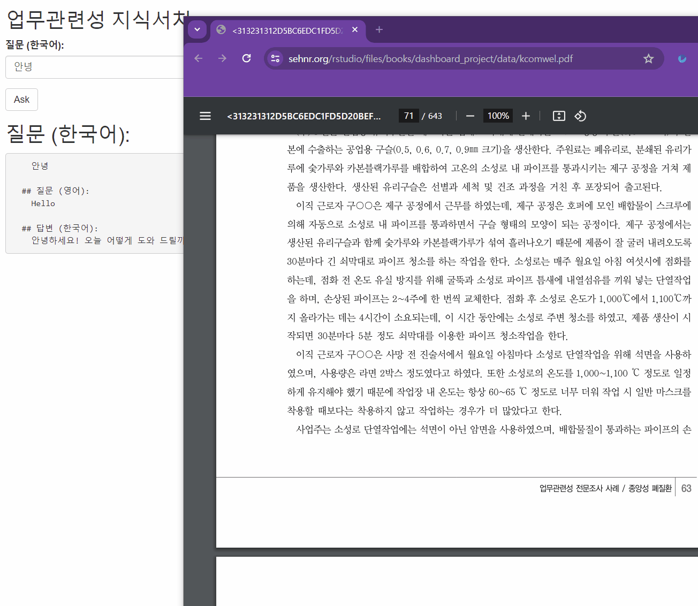

import os
import openai
# Securely fetch the API key from environment variables
api_key = os.getenv('OPENAI_API_KEY')
openai.api_key = api_key
from langchain.embeddings.openai import OpenAIEmbeddings
embed_object = OpenAIEmbeddings()
from langchain.vectorstores import Chroma
chroma_store_directory = "db/chroma_dbs"
# Initialize Chroma with the specified directory and embedding function
vectordb = Chroma(persist_directory=chroma_store_directory, embedding_function=embed_object)
# Now, you can proceed with using vectordb to store or retrieve embeddings16 VectorDB with shiny

16.1 load vectorDB
16.2 shiny
for global
library(shiny)
library(reticulate)
library(rmarkdown)
library(httr)
library(jsonlite)
library(httr)
library(jsonlite)
source_python("pyscript/load_db.py")
source("source/translate_text_with_openai.R")for ui
ui <- fluidPage(
titlePanel("업무관련성 지식서치"),
textInput("question_kr", "질문 (한국어):", ""),
actionButton("submit", "Ask"),
htmlOutput("answer")
)for server
server <- function(input, output) {
observeEvent(input$submit, {
question_kr <- input$question_kr
# 한국어 질문을 영어로 번역 (httr 사용, 오류 처리 포함)
question_en <- tryCatch(
translate_to_english_httr(question_kr, api_key),
error = function(e) {
sprintf("번역 오류 (한국어 -> 영어): %s", e$message)
}
)
# 번역 오류 처리
if (grepl("Error", question_en)) {
output$answer <- renderUI({
HTML(paste("<b>오류:</b>", question_en))
})
return()
}
# 영어 질문으로 답변 얻기 (오류 처리 포함)
answer_en <- tryCatch({
py_run_string(sprintf('
my_question = "%s"
sim_docs = vectordb.similarity_search(my_question)
mm_docs = vectordb.max_marginal_relevance_search(my_question, k = 3, fetch_k = 5)
from langchain.chat_models import ChatOpenAI
the_llm = ChatOpenAI(model_name="gpt-3.5-turbo", temperature=0)
from langchain.chains import RetrievalQA
qa_chain = RetrievalQA.from_chain_type(the_llm,retriever=vectordb.as_retriever())
answer = qa_chain.run(my_question)
', stringr::str_replace_all(question_en, '"', '\\"')))
}, error = function(e) {
sprintf("답변 생성 오류: %s", e$message)
})$answer
# 답변 생성 오류 처리
if (grepl("Error", answer_en)) {
output$answer <- renderUI({
HTML(paste("<b>오류:</b>", answer_en))
})
return()
}
# 영어 답변을 한국어로 번역 (httr 사용, 오류 처리 포함)
answer_kr <- tryCatch(
translate_to_english_httr(answer_en, api_key, target_lang = "ko"),
error = function(e) {
sprintf("번역 오류 (영어 -> 한국어): %s", e$message)
}
)
# 번역 오류 처리
if (grepl("Error", answer_kr)) {
output$answer <- renderUI({
HTML(paste("<b>오류:</b>", answer_kr))
})
return()
}
# Format answer using Markdown
markdown_content <- sprintf(
"## 질문 (한국어):
%s
## 질문 (영어):
%s
## 답변 (한국어):
%s", question_kr, question_en, answer_kr)
# Convert Markdown to HTML
html_content <- markdown::renderMarkdown(text = markdown_content)
# Display the HTML content
output$answer <- renderUI({
HTML(html_content)
})
})
}